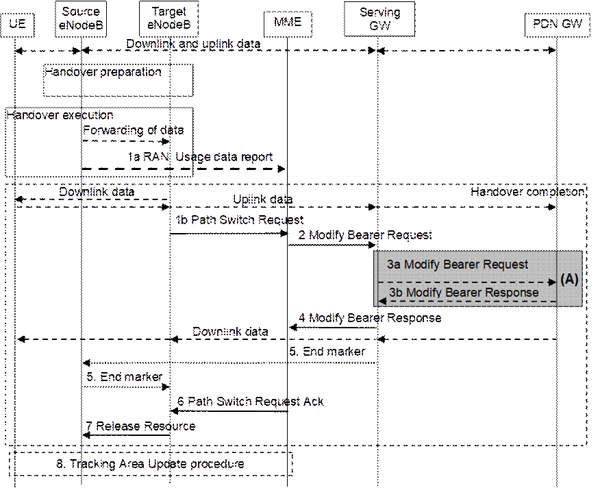
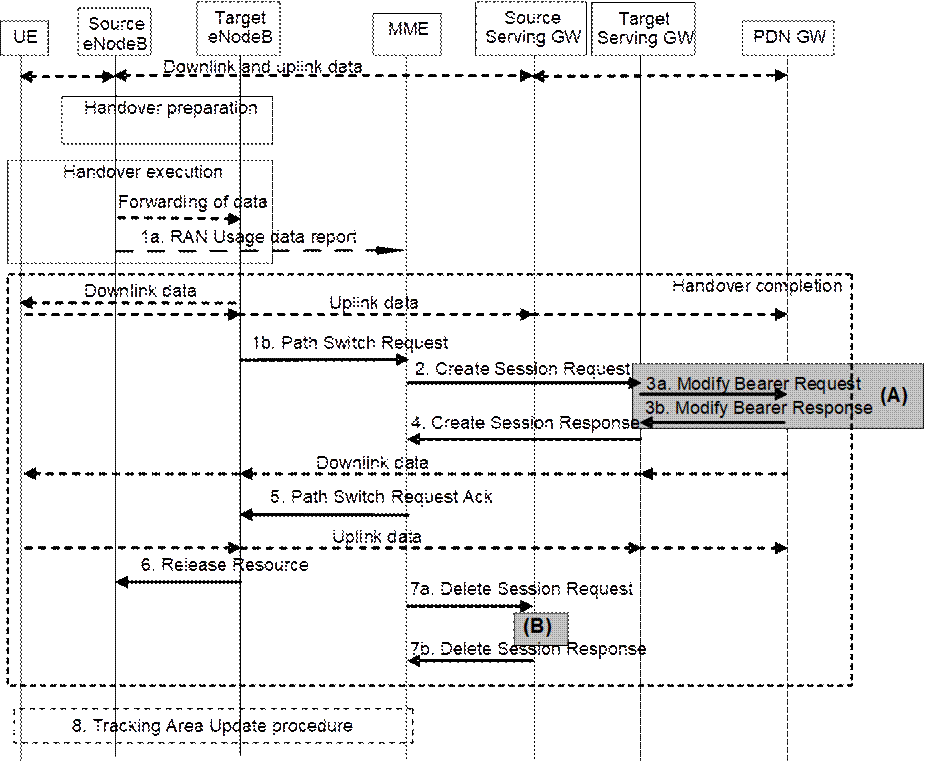
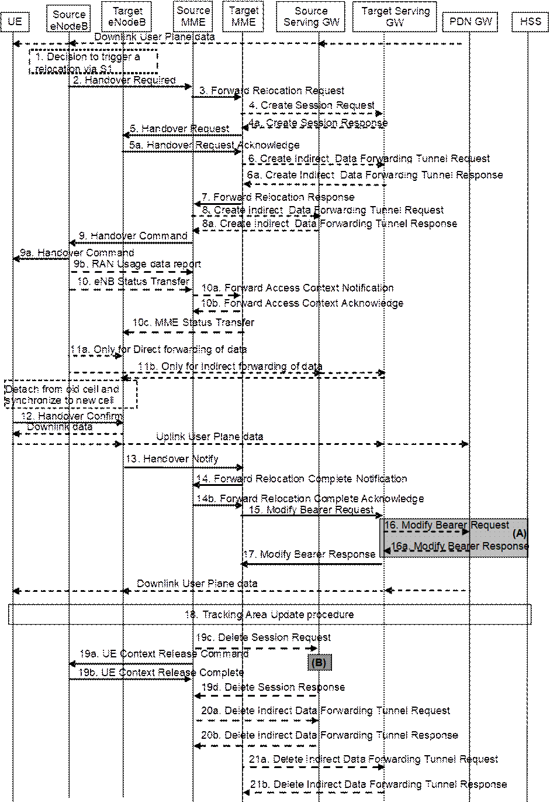
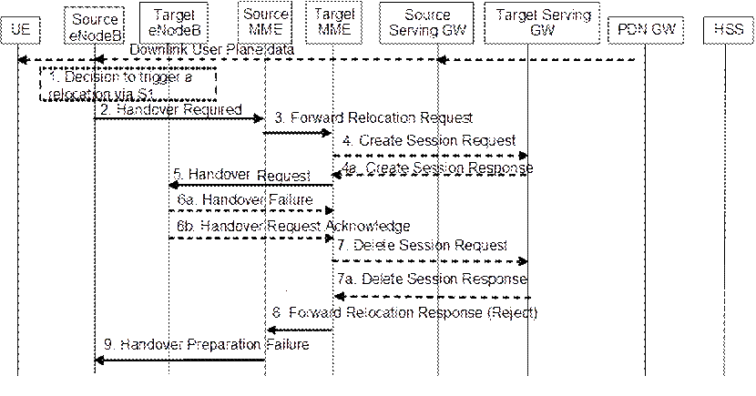

These procedures are used to hand over a UE from a source eNodeB to a target eNodeB using the X2 reference point. In these procedures the MME is unchanged. Two procedures are defined depending on whether the Serving GW is unchanged or is relocated. In addition to the X2 reference point between the source and target eNodeB, the procedures rely on the presence of S1-MME reference point between the MME and the source eNodeB as well as between the MME and the target eNodeB.
The handover preparation and execution phases are performed as specified in TS 36.300 [5]. If emergency bearer services are ongoing for the UE handover to the target eNodeB is performed independent of the Handover Restriction List. The MME checks, as part of the Tracking Area Update in the execution phase, if the handover is to a restricted area and if so MME releases the non-emergency bearers as specified in clause 5.10.3.
If the serving PLMN changes during X2-based handover, the source eNodeB shall indicate to the target eNodeB (in the Handover Restriction List) the PLMN selected to be the new Serving PLMN.
When the UE receives the handover command it will remove any EPS bearers for which it did not receive the corresponding EPS radio bearers in the target cell. As part of handover execution, downlink and optionally also uplink packets are forwarded from the source eNodeB to the target eNodeB. When the UE has arrived to the target eNodeB, downlink data forwarded from the source eNodeB can be sent to it. Uplink data from the UE can be delivered via the (source) Serving GW to the PDN GW or optionally forwarded from the source eNodeB to the target eNodeB. Only the handover completion phase is affected by a potential change of the Serving GW, the handover preparation and execution phases are identical.
If the MME receives a rejection to a NAS procedure (e.g. dedicated bearer establishment/modification/release; location reporting control; NAS message transfer; etc.) from the eNodeB with an indication that an X2 handover is in progress (see TS 36.300 [5]), the MME shall reattempt the same NAS procedure either when the handover is complete or the handover is deemed to have failed, except in case of Serving GW relocation. The failure is known by expiry of the timer guarding the NAS procedure.
If the X2 handover includes the Serving GW relocation, and if the MME receives a rejection to a NAS message transfer for a Downlink NAS Transport or Downlink Generic NAS Transport message from the eNodeB with an indication that an X2 handover is in progress, the MME should resend the corresponding message to the target eNodeB when either the handover is complete or to the source eNodeB when the handover is deemed to have failed if the MME is still the serving MME.
If the MME receives a rejection to a NAS message transfer for a CS Service Notification or to a UE Context Modification Request message with a CS Fallback indicator from the eNodeB with an indication that an X2 handover is in progress, the MME shall resend the corresponding message to the target eNodeB when the handover is complete or to the source eNodeB when the handover is deemed to have failed.
If during the handover procedure the MME detects that the Serving GW needs be relocated, the MME shall reject any PDN GW initiated EPS bearer(s) request received since handover procedure started and shall include an indication that the request has been temporarily rejected due to handover procedure in progress. The rejection is forwarded by the Serving GW to the PDN GW, with the indication that the request has been temporarily rejected.
Upon reception of a rejection for an EPS bearer(s) PDN GW initiated procedure with an indication that the request has been temporarily rejected due to handover procedure in progress, the PDN GW start a locally configured guard timer. The PDN GW shall re-attempt, up to a pre-configured number of times, when either it detects that the handover is completed or has failed using message reception or at expiry of the guard timer.
If the source eNodeB and target eNodeB support RACS as defined in clause 5.11.3a, the Source to Target transparent container shall contain the UE's UE Radio Capability ID.
This procedure is used to hand over a UE from a source eNodeB to a target eNodeB using X2 when the MME is unchanged and decides that the Serving GW is also unchanged. The presence of IP connectivity between the Serving GW and the source eNodeB, as well as between the Serving GW and the target eNodeB is assumed.

Figure 5.5.1.1.2-1: X2-based handover without Serving GW relocation
NOTE 1: For a PMIP-based S5/S8, procedure steps (A) are defined in TS 23.402 [2].
1a. If the PLMN has configured secondary RAT usage reporting, the source eNodeB during the handover execution phase may provide RAN usage data Report (Secondary RAT usage data, handover flag) to the MME. The source eNB shall provide this only when the Target eNB has confirmed handover over X2 interface (see TS 36.300 [5] and the source eNB has sent a HO command to the UE). The handover flag indicates to the MME that it should buffer the usage data report before forwarding it to the Serving GW.
1b. The target eNodeB sends a Path Switch Request message to MME to inform that the UE has changed cell, including the TAI+ECGI of the target cell and the list of EPS bearers to be switched.
If Dual Connectivity is activated for the UE, the PSCell ID shall be included in the Path Switch Request message.
If the target cell is a CSG cell , the target eNodeB includes the CSG ID of the target cell in Path Switch Request message. If the target cell is in hybrid mode, it includes the CSG ID of the target cell and CSG Access Mode set to "hybrid" in the Path Switch Request message. Moreover, the Path Switch Request message contains the CSG Membership Status IE if the hybrid cell accessed by the UE has a different CSG from the source cell or the source cell does not have a CSG ID. The MME determines the CSG membership based on the CSG ID and the target PLMN id received from the target eNodeB.The MME updates the User CSG information based on the CSG ID and CSG Access Mode received from the target eNodeB and CSG membership if one of the parameters has changed.
For SIPTO at the Local Network with stand-alone GW architecture, the target eNodeB shall include the Local Home Network ID of the target cell in the Path Switch Request message.
The MME determines that the Serving GW can continue to serve the UE.
2. The MME sends a Modify Bearer Request (eNodeB address(es) and TEIDs for downlink user plane for the accepted EPS bearers, ISR Activated, Secondary RAT usage data) message per PDN connection to the Serving GW for each PDN connection where the default bearer has been accepted by the target eNodeB. If the PDN GW requested location information change reporting, the MME also includes the User Location Information IE in this message if it is different compared to the previously sent information. If the UE Time Zone has changed, the MME includes the UE Time Zone IE in this message. If the Serving Network has changed, the MME includes the new Serving Network IE in this message. If ISR was activated before this procedure, MME should maintain ISR. The UE is informed about the ISR status in the Tracking Area Update procedure. If the Serving GW supports Modify Access Bearers Request procedure and if there is no need for the SGW to send the signalling to the PDN GW, the MME may send Modify Access Bearers Request (eNodeB address(es) and TEIDs for downlink user plane for the accepted EPS bearers, ISR Activated) per UE to the Serving GW to optimise the signalling. The MME includes the Secondary RAT usage data if the MME received it from the source eNodeB in step 1a.
If the PDN GW requested UE's User CSG information (determined from the UE context), the MME includes the User CSG Information IE in this message if the User CSG Information has changed.
The MME uses the list of EPS bearers to be switched, received in step 1, to determine whether any dedicated EPS bearers in the UE context have not been accepted by the target eNodeB. The MME releases the non-accepted dedicated bearers by triggering the bearer release procedure as specified in clause 5.4.4.2. If the Serving GW receives a DL packet for a non-accepted bearer, the Serving GW drops the DL packet and does not send a Downlink Data Notification to the MME.
If the default bearer of a PDN connection has not been accepted by the target eNodeB and there are multiple PDN connections active, the MME shall consider all bearers of that PDN connection as failed and release that PDN connection by triggering the MME requested PDN disconnection procedure specified in clause 5.10.3.
If none of the default EPS bearers have been accepted by the target eNodeB or there is a LIPA PDN connection that has not been released, the MME shall act as specified in step 6.
3. If the Serving GW has received the User Location Information IE and/or the UE Time Zone IE and/or the Serving Network IE and/or User CSG Information IE from the MME in step 2 the Serving GW informs the PDN GW(s) about this information that e.g. can be used for charging, by sending the message Modify Bearer Request (Serving GW Address and TEID, User Location Information IE and/or UE Time Zone IE and/or Serving Network IE and/or User CSG Information IE, Secondary RAT usage data) per PDN connection to the PDN GW(s) concerned. The Serving GW shall return a Modify Bearer Response (Serving GW address and TEID for uplink traffic) message to the MME as a response to a Modify Bearer Request message, or a Modify Access Bearers Response (Serving GW address and TEID for uplink traffic) as a response to a Modify Access Bearers Request message. If the Serving GW cannot serve the MME Request in the Modify Access Bearers Request message without S5/S8 signalling or without corresponding Gxc signalling when PMIP is used over the S5/S8 interface, it shall respond to the MME with indicating that the modifications are not limited to S1-U bearers, and the MME shall repeat its request using Modify Bearer Request message per PDN connection. The Serving GW forwards the Secondary RAT usage data to the PDN GW, if the Serving GW received it in step 2 and if PGW secondary RAT usage data reporting is active.
4. The Serving GW starts sending downlink packets to the target eNodeB using the newly received address and TEIDs. A Modify Bearer Response message is sent back to the MME.
5. In order to assist the reordering function in the target eNodeB, the Serving GW shall send one or more "end marker" packets on the old path immediately after switching the path as defined in TS 36.300 [5], clause 10.1.2.2.
6. The MME confirms the Path Switch Request message with the Path Switch Request Ack message. If the UE‑AMBR is changed, e.g. all the EPS bearers which are associated to the same APN are rejected in the target eNodeB, the MME shall provide the updated value of UE‑AMBR to the target eNodeB in the Path Switch Request Ack message.
If the CSG membership status was included in the Path Switch Request message, the MME shall include its verified CSG membership status in the Path Switch Request Ack message.
If some EPS bearers have not been switched successfully in the core network, the MME shall indicate in the Path Switch Request Ack message which bearers failed to be established (see more detail in TS 36.413 [36]) and for dedicated bearers initiate the bearer release procedure as specified in clause 5.4.4.2 to release the core network resources of the failed dedicated EPS bearers. The target eNodeB shall delete the corresponding bearer contexts when it is informed that bearers have not been established in the core network.
If none of the default EPS bearers have been switched successfully in the core network or if they have not been accepted by the target eNodeB or the LIPA PDN connection has not been released, the MME shall send a Path Switch Request Failure message (see more detail in TS 36.413 [36]) to the target eNodeB. The MME performs explicit detach of the UE as described in the MME initiated detach procedure of clause 5.3.8.3.
If the MME supports RACS as defined in clause 5.11.3a and has UE Radio Capability ID stored in the UE's context it includes it in the Path Switch Request Ack message.
7. By sending Release Resource the target eNodeB informs success of the handover to source eNodeB and triggers the release of resources. This step is specified in TS 36.300 [5].
8. The UE initiates a Tracking Area Update procedure when one of the conditions listed in clause "Triggers for tracking area update" applies. If ISR is activated for the UE when the MME receives the Tracking Area Update Request, the MME should maintain ISR by indicating ISR Activated in the Tracking Area Update Accept message.
NOTE 2: It is only a subset of the TA update procedure that is performed by the MME, since the UE is in ECM‑CONNECTED state and the MME is not changed.
This procedure is used to hand over a UE from a source eNodeB to a target eNodeB using X2 when the MME is unchanged and the MME decides that the Serving GW is to be relocated. The presence of IP connectivity between the source Serving GW and the source eNodeB, between the source Serving GW and the target eNodeB, and between the target Serving GW and target eNodeB is assumed. (If there is no IP connectivity between target eNodeB and source Serving GW, it is assumed that the S1-based handover procedure in clause 5.5.1.2 shall be used instead.)

Figure 5.5.1.1.3-1: X2-based handover with Serving GW relocation
NOTE 1: For a PMIP-based S5/S8, procedure steps (A) and (B) are defined in TS 23.402 [2].
1a. If the PLMN has configured Secondary RAT usage data reporting and the source eNodeB has Secondary RAT usage data to report, the eNodeB sends a RAN usage data Report (Secondary RAT usage data, handover flag) message to the MME. The eNB shall provide this only when it is to perform a Path Switch (i.e. the Target eNB has confirmed it is ready over X2 interface (see TS 36.300 [5] and the source eNB has sent a HO command to the UE). The handover flag indicates to the MME that it should buffer the report before forwarding the Secondary RAT usage charging data.
1b. The target eNodeB sends a Path Switch Request message to MME to inform that the UE has changed cell, including the ECGI of the target cell and the list of EPS bearers to be switched.
If Dual Connectivity is activated for the UE, the PSCell ID shall be included in the Path Switch Request message.
If the target cell is a CSG cell, the target eNodeB includes the CSG ID of the target cell in Path Switch Request message. If the target cell is in hybrid mode, it includes the CSG ID of the target cell and CSG Access Mode set to "hybrid" in the Path Switch Request message. Moreover, the Path Switch Request message contains the CSG Membership Status IE if the hybrid cell accessed by the UE has a different CSG from the source cell or the source cell does not have a CSG ID. The MME determines the CSG membership based on the CSG ID and the target PLMN id received from the target eNodeB. The MME updates the User CSG information based on the CSG ID and CSG Access Mode received from the target eNodeB and CSG membership if one of the parameters has changed.
For SIPTO at the Local Network with stand-alone GW architecture, the target eNodeB shall include the Local Home Network ID of the target cell in the Path Switch Request message.
The MME determines that the Serving GW is relocated and selects a new Serving GW according to clause 4.3.8.2 on "Serving GW Selection Function".
NOTE 2: The MME knows the S‑GW Service Area with a TA granularity.
2. The MME sends a Create Session Request (bearer context(s) with PDN GW addresses and TEIDs (for GTP-based S5/S8) or GRE keys (for PMIP-based S5/S8) at the PDN GW(s) for uplink traffic, eNodeB address(es) and TEIDs for downlink user plane for the accepted EPS bearers, the Protocol Type over S5/S8, Serving Network, UE Time Zone, Secondary RAT usage data) message per PDN connection to the target Serving GW for each PDN connection where the default bearer has been accepted by the target eNodeB. The target Serving GW allocates the S‑GW addresses and TEIDs for the uplink traffic on S1_U reference point (one TEID per bearer). The Protocol Type over S5/S8 is provided to Serving GW which protocol should be used over S5/S8 interface. If the PDN GW requested location information change reporting, the MME also includes the User Location Information IE in this message if it is different compared to the previously sent information. If the PDN GW requested UE's User CSG information (determined from the UE context), the MME includes the User CSG Information IE in this message if the User CSG Information has changed.
The MME uses the list of EPS bearers to be switched, received in step 1, to determine whether any dedicated EPS bearers in the UE context have not been accepted by the target eNodeB. The MME releases the non-accepted dedicated bearers by triggering the bearer release procedure as specified in clause 5.4.4.2 via target Serving GW. If the Serving GW receives a DL packet for a non-accepted bearer, the Serving GW drops the DL packet and does not send a Downlink Data Notification to the MME.
If the default bearer of a PDN connection has not been accepted by the target eNodeB and there are multiple PDN connections active, the MME shall consider all bearers of that PDN connection as failed and release that PDN connection by triggering the MME requested PDN disconnection procedure specified in clause 5.10.3 via source Serving GW.
If none of the default EPS bearers have been accepted by the target eNodeB or there is a LIPA PDN connection that has not been released, the MME shall act as specified in step 5.
If the MME received it from the source eNodeB in step 1a and PDN GW Secondary RAT reporting is active, the MME includes the Secondary RAT usage data with a flag stating that the target SGW shall not process the information and only forward it to the PDN GW.
3. The target Serving GW assigns addresses and TEIDs (one per bearer) for downlink traffic from the PDN GW. The Serving GW allocates DL TEIDs on S5/S8 even for non-accepted bearers. It sends a Modify Bearer Request (Serving GW addresses for user plane and TEID(s), Serving Network, PDN Charging Pause Support Indication, Secondary RAT usage data) message per PDN connection to the PDN GW(s). The S‑GW also includes User Location Information IE and/or UE Time Zone IE and/or User CSG Information IE if it is present in step 2. The PDN GW updates its context field and returns a Modify Bearer Response (Charging Id, MSISDN, PDN Charging Pause Enabled Indication (if PDN GW has chosen to enable the function), etc.) message to the Serving GW. The MSISDN is included if the PDN GW has it stored in its UE context. The PDN GW starts sending downlink packets to the target GW using the newly received address and TEIDs. These downlink packets will use the new downlink path via the target Serving GW to the target eNodeB. The Serving GW shall allocate TEIDs for the failed bearers and inform to the MME. The Serving GW forwards the Secondary RAT usage data to the PDN GW, if the Serving GW received it in step 2 and if PGW secondary RAT usage data reporting is active.
If the Serving GW is relocated, the PDN GW shall send one or more "end marker" packets on the old path immediately after switching the path in order to assist the reordering function in the target eNodeB. The source Serving GW shall forward the "end marker" packets to the source eNodeB.
4. The target Serving GW sends a Create Session Response (Serving GW addresses and uplink TEID(s) for user plane) message back to the target MME. The MME starts a timer, to be used in step 7.
5. The MME confirms the Path Switch Request message with the Path Switch Request Ack (Serving GW addresses and uplink TEID(s) for user plane) message. If the UE‑AMBR is changed, e.g. all the EPS bearers which are associated to the same APN are rejected in the target eNodeB, the MME shall provide the updated value of UE‑AMBR to the target eNodeB in the Path Switch Request Ack message. The target eNodeB starts using the new Serving GW address(es) and TEID(s) for forwarding subsequent uplink packets.
If the CSG membership status was included in the Path Switch Request message, the MME shall include its verified CSG membership status in the Path Switch Request Ack message.
If some EPS bearers have not been switched successfully in the core network, the MME shall indicate in the Path Switch Request Ack message which bearers failed to be established (see more detail in TS 36.413 [36]) and for dedicated bearers initiate the bearer release procedure as specified in clause 5.4.4.2 to release the core network resources of the failed dedicated EPS bearers. The target eNodeB shall delete the corresponding bearer contexts when it is informed that bearers have not been established in the core network.
If none of the default EPS bearers have been switched successfully in the core network or if they have not been accepted by the target eNodeB or the LIPA PDN connection has not been released, the MME shall send a Path Switch Request Failure message (see more detail in TS 36.413 [36]) to the target eNodeB. The MME performs explicit detach of the UE as described in the MME initiated detach procedure of clause 5.3.8.3.
If the MME supports RACS as defined in clause 5.11.3a and has UE Radio Capability ID stored in the UE's context it includes it in the Path Switch Request Ack message.
6. By sending Release Resource the target eNodeB informs success of the handover to source eNodeB and triggers the release of resources. This step is specified in TS 36.300 [5].
7. When the timer has expired after step 4, the source MME releases the bearer(s) in the source Serving GW by sending a Delete Session Request message (Cause, Operation Indication, Secondary RAT usage data). The operation Indication flag is not set, that indicates to the Source Serving GW that the Source Serving GW shall not initiate a delete procedure towards the PDN GW. The Source Serving GW acknowledges with Delete Session Response messages. If ISR has been activated before this procedure, the cause indicates to the Source S‑GW that the Source S‑GW shall delete the bearer resources on the other old CN node by sending Delete Bearer Request message(s) to that CN node. The MME includes the Secondary RAT usage data in this message if it received it in step 1a.
8. The UE initiates a Tracking Area Update procedure when one of the conditions listed in clause "Triggers for tracking area update" applies.
NOTE 3: It is only a subset of the TA update procedure that is performed by the MME, since the UE is in ECM‑CONNECTED state. The UE is informed about the ISR status in the Tracking Area Update procedure.
The S1-based handover procedure is used when the X2-based handover cannot be used. The source eNodeB initiates a handover by sending Handover Required message over the S1-MME reference point. This procedure may relocate the MME and/or the Serving GW. The source MME selects the target MME. The MME should not be relocated during inter-eNodeB handover unless the UE leaves the MME Pool Area where the UE is served. The MME (target MME for MME relocation) determines if the Serving GW needs to be relocated. If the Serving GW needs to be relocated the MME selects the target Serving GW, as specified in clause 4.3.8.2 on Serving GW selection function.
The source eNodeB decides which of the EPS bearers are subject for forwarding of downlink and optionally also uplink data packets from the source eNodeB to the target eNodeB. The EPC does not change the decisions taken by the RAN node. Packet forwarding can take place either directly from the source eNodeB to the target eNodeB, or indirectly from the source eNodeB to the target eNodeB via the source and target Serving GWs (or if the Serving GW is not relocated, only the single Serving GW).
The availability of a direct forwarding path is determined in the source eNodeB and indicated to the source MME. If X2 connectivity is available between the source and target eNodeBs, a direct forwarding path is available.
If a direct forwarding path is not available, indirect forwarding may be used. The source MME uses the indication from the source eNodeB to determine whether to apply indirect forwarding. The source MME indicates to the target MME whether indirect forwarding should apply. Based on this indication, the target MME determines whether it applies indirect forwarding.
If the MME receives a rejection to an S1 interface procedure (e.g. dedicated bearer establishment/modification/release; location reporting control; NAS message transfer; etc.) from the eNodeB with an indication that an S1 handover is in progress (see TS 36.300 [5]), the MME shall reattempt the same S1 interface procedure when either the handover is complete or is deemed to have failed if the MME is still the serving MME, except in case of Serving GW relocation. If the S1 handover changes the serving MME, the source MME shall terminate any other ongoing S1 interface procedures except the handover procedure.
If the S1 handover includes the Serving GW relocation, and if the MME receives a rejection to a NAS message transfer for a Downlink NAS Transport or Downlink Generic NAS Transport message from the eNodeB with an indication that an S1 handover is in progress, the MME should resend the corresponding message to the target eNodeB when either the handover is complete or to the source eNodeB when the handover is deemed to have failed if the MME is still the serving MME.
If the MME receives a rejection to a NAS message transfer for a CS Service Notification or to a UE Context modification Request message with a CS Fallback indication from the eNodeB with an indication that an S1 handover is in progress, the MME shall resend the corresponding message to the target eNodeB when either the handover is complete or to the source eNodeB when the handover is deemed to have failed if the MME is still the serving MME.
In order to minimise the number of procedures rejected by the eNodeB, the MME should pause non-handover related S1 interface procedures (e.g. downlink NAS message transfer, E-RAB Setup/Modify/Release, etc.) while a handover is ongoing (i.e. from the time that a Handover Required has been received until either the Handover procedure has succeeded (Handover Notify) or failed (Handover Failure)) and continue them once the Handover procedure has completed if the MME is still the serving MME, except in case of Serving GW relocation.
If during the handover procedure the MME detects that the Serving GW or/and the MME needs be relocated, the MME shall reject any PDN GW initiated EPS bearer(s) request received since handover procedure started and shall include an indication that the request has been temporarily rejected due to handover procedure in progress. The rejection is forwarded by the Serving GW to the PDN GW, with the indication that the request has been temporarily rejected.
Upon reception of a rejection for an EPS bearer(s) PDN GW initiated procedure with an indication that the request has been temporarily rejected due to handover procedure in progress, the PDN GW start a locally configured guard timer. The PDN GW shall re-attempt, up to a pre-configured number of times, when either it detects that the handover is completed or has failed using message reception or at expiry of the guard timer.
If emergency bearer services are ongoing for the UE, handover to the target eNodeB is performed independent of the Handover Restriction List. The MME checks, as part of the Tracking Area Update in the execution phase, if the handover is to a restricted area and if so MME releases the non-emergency bearers as specified in clause 5.10.3.
If emergency bearer services are ongoing for the UE, handover to the target CSG cell is performed independent of the UE's CSG subscription. If the handover is to a CSG cell that the UE is not subscribed, the target eNodeB only accepts the emergency bearers and the target MME releases the non-emergency PDN connections that were not accepted by the target eNodeB as specified in clause 5.10.3.
For inter-PLMN handover to a CSG cell, if the source MME has the CSG-ID list of the target PLMN, the source MME shall use it to validate the CSG membership of the UE in the target CSG cell. Otherwise, based on operator's configuration the source MME may allow the handover by validating the CSG membership of the UE in the target CSG cell using the CSG-ID list of the registered PLMN-ID. If neither the CSG-ID list of the target PLMN nor the operator's configuration permits the handover,the source MME shall reject the handover due to no CSG membership information of the target PLMN-ID.
As specified in clause 4.3.8.3, with regard to CIoT EPS Optimisations, the source MME attempts to perform handover to a target MME that can support the UE's Preferred Network Behaviour. For a UE that is using a Non-IP connection to a PDN Gateway, or a PDN connection to a SCEF, if these bearers cannot be supported by the target MME, the source MME does not attempt to handover those bearers, but instead releases them upon successful completion of the handover. If the MME does not have any bearer for the UE that can be transferred, then the MME sends an S1-AP Handover Preparation Failure message to the source eNB.
For PDN connection of Ethernet Type, if the target MME does not support Ethernet PDN Type, the source MME does not attempt to handover those bearers, but instead releases them upon successful completion of the handover.
NOTE: Inter-PLMN handover to a CSG cell in a PLMN which is not an equivalent PLMN for the UE is not supported.
If the source eNodeB and target eNodeB support RACS as defined in clause 5.11.3a, the Source to Target transparent container shall contain the UE's UE Radio Capability ID.
This procedure describes the S1-based handover
in the normal case, clause 5.5.1.2.3 describes it when the procedure is
rejected by the target eNodeB or the target MME and clause 5.5.1.2.4
describes when the procedure is canceled by the source eNodeB.

Figure 5.5.1.2.2-1: S1-based handover
NOTE 1: For a PMIP-based S5/S8, procedure steps (A) and (B) are defined in TS 23.402 [2]. Steps 16 and 16a concern GTP based S5/S8.
NOTE 2: If the Serving GW is not relocated, the box "Source Serving GW" in figure 5.5.1.2.2-1 is acting as the target Serving GW.
1. The source eNodeB decides to initiate an S1-based handover to the target eNodeB. This can be triggered e.g. by no X2 connectivity to the target eNodeB, or by an error indication from the target eNodeB after an unsuccessful X2-based handover, or by dynamic information learnt by the source eNodeB.
2. The source eNodeB sends Handover Required (Direct Forwarding Path Availability, Source to Target transparent container, target eNodeB Identity, CSG ID, CSG access mode, target TAI, S1AP Cause) to the source MME. The source eNodeB indicates which bearers are subject to data forwarding. Direct Forwarding Path Availability indicates whether direct forwarding is available from the source eNodeB to the target eNodeB. This indication from source eNodeB can be based on e.g. the presence of X2. The target TAI is sent to MME to facilitate the selection of a suitable target MME. When the target cell is a CSG cell or a hybrid cell, the source eNodeB shall include the CSG ID of the target cell. If the target cell is a hybrid cell, the CSG access mode shall be indicated.
3. The source MME selects the target MME as described in clause 4.3.8.3 on "MME Selection Function" and if it has determined to relocate the MME, it sends a Forward Relocation Request (MME UE context, Source to Target transparent container, RAN Cause, target eNodeB Identity, CSG ID, CSG Membership Indication, target TAI, MS Info Change Reporting Action (if available), CSG Information Reporting Action (if available), UE Time Zone, Direct Forwarding Flag, Serving Network, Local Home Network ID, LTE-M UE Indication) message to the target MME. The target TAI is sent to the target MME to help it to determine whether S‑GW relocation is needed (and, if needed, aid SGW selection). The old Serving Network is sent to target MME to support the target MME to resolve if Serving Network is changed. In network sharing scenarios Serving Network denotes the serving core network.
The source MME shall perform access control by checking the UE's CSG subscription when CSG ID is provided by the source eNodeB. If there is no subscription data for this CSG ID or the CSG subscription is expired, and the target cell is a CSG cell, the source MME shall reject the handover with an appropriate cause unless the UE has emergency bearer services.
The MME UE context includes IMSI, ME Identity, UE security context, UE Network Capability, AMBR, Selected CN operator ID, APN restriction, Serving GW address and TEID for control signalling, and EPS Bearer context(s).
An EPS Bearer context includes the PDN GW addresses and TEIDs (for GTP-based S5/S8) or GRE keys (for PMIP-based S5/S8) at the PDN GW(s) for uplink traffic, APN, Serving GW addresses and TEIDs for uplink traffic, and TI.
Based on the CIoT EPS Optimisation capabilities of the target MME (determined according to the target MME selection procedure of clause 4.3.8.3) the source MME only includes the EPS Bearer Context(s) that the target MME can support. If none of the UE's EPS Bearers can be supported by the selected target MME, the source MME rejects the S1 handover attempt by sending a Handover Preparation Failure (Cause) message to the Source eNodeB. If the target MME supports CIoT EPS Optimisation and the use of header compression has been negotiated between the UE and the source MME, the source MME also includes in the Forward Relocation Request the previously negotiated Header Compression Configuration that includes the information necessary for the ROHC channel setup but not the RoHC context itself.
If the source MME includes EPS Bearer Context, in addition to the Serving GW IP address and TEID for S1-U use plane, the source MME also includes Serving GW IP address and TEID for S11-U, if available.
NOTE 3: If the handover is successful, the source MME will signal to the SGW and/or SCEF to release any non-included EPS Bearers after step 14. The non-included bearers are locally released by the UE following the Bearer Context Status synchronisation that occurs during the Tracking Area Update at step 18.
If SIPTO at the Local Network is active for a PDN connection in the architecture with stand-alone GW the source MME shall include the Local Home Network ID of the source cell in the EPS Bearer context corresponding to the SIPTO at the Local Network PDN connection.
RAN Cause indicates the S1AP Cause as received from source eNodeB.
The source MME includes the CSG ID in the Forward Relocation Request when the target cell is a CSG or hybrid cell. When the target cell is a hybrid cell, or if there are one or several emergency bearers and the target cell is a CSG cell, the CSG Membership Indication indicating whether the UE is a CSG member shall be included in the Forward Relocation Request message.
The Direct Forwarding Flag indicates if direct forwarding is applied, or if indirect forwarding is going to be set up by the source side.
The target MME shall determine the Maximum APN restriction based on the APN Restriction of each bearer context in the Forward Relocation Request, and shall subsequently store the new Maximum APN restriction value.
If the UE receives only emergency services and the UE is UICCless, IMSI can not be included in the MME UE context in Forward Relocation Request message. For emergency attached UEs, if the IMSI cannot be authenticated, then the IMSI shall be marked as unauthenticated. Also, in this case, security parameters are included only if available.
If a UE is RLOS attached, the old MME includes an RLOS indication to the new MME. If the RLOS attached UE in the old MME does not have a USIM, IMSI can not be included in the Forward Relocation Request message. If the RLOS attached UE has USIM but the IMSI cannot be successfully authenticated, then the IMSI shall be marked as unauthenticated. Also, in this case, security parameters are included only if available.
If the Old MME is aware the UE is a LTE-M UE, it provides the LTE-M UE Indication to the new MME.
4. If the MME has been relocated, the target MME verifies whether the source Serving GW can continue to serve the UE. If not, it selects a new Serving GW as described in clause 4.3.8.2 on "Serving GW Selection Function". If the MME has not been relocated, the source MME decides on this Serving GW re-selection.
If the source Serving GW continues to serve the UE, no message is sent in this step. In this case, the target Serving GW is identical to the source Serving GW.
If a new Serving GW is selected, the target MME sends a Create Session Request (bearer context(s) with PDN GW addresses and TEIDs (for GTP-based S5/S8) or GRE keys (for PMIP-based S5/S8) at the PDN GW(s) for uplink traffic, Serving Network, UE Time Zone) message per PDN connection to the target Serving GW. The target Serving GW allocates the S‑GW addresses and TEIDs for the uplink traffic on S1_U reference point (one TEID per bearer). The target Serving GW sends a Create Session Response (Serving GW addresses and uplink TEID(s) for user plane) message back to the target MME.
5. The Target MME sends Handover Request (EPS Bearers to Setup, AMBR, S1AP Cause, Source to Target transparent container, CSG ID, CSG Membership Indication, Handover Restriction List, UE Radio Capability ID) message to the target eNodeB. This message creates the UE context in the target eNodeB, including information about the bearers, and the security context. For each EPS Bearer, the Bearers to Setup includes Serving GW address and uplink TEID for user plane, and EPS Bearer QoS. If the direct forwarding flag indicates unavailability of direct forwarding and the target MME knows that there is no indirect data forwarding connectivity between source and target, the Bearers to Setup shall include "Data forwarding not possible" indication for each EPS bearer. Handover Restriction List is sent if available in the Target MME; it is described in clause 4.3.5.7 "Mobility Restrictions".
S1AP Cause indicates the RAN Cause as received from source MME.
The Target MME shall include the CSG ID and CSG Membership Indication when provided by the source MME in the Forward Relocation Request message.
The target eNodeB sends a Handover Request Acknowledge (EPS Bearer Setup list, EPS Bearers failed to setup list Target to Source transparent container) message to the target MME. The EPS Bearer Setup list includes a list of addresses and TEIDs allocated at the target eNodeB for downlink traffic on S1‑U reference point (one TEID per bearer) and addresses and TEIDs for receiving forwarded data if necessary. If the UE‑AMBR is changed, e.g. all the EPS bearers which are associated to the same APN are rejected in the target eNodeB, the MME shall recalculate the new UE-AMBR and signal the modified UE‑AMBR value to the target eNodeB.
If none of the default EPS bearers have been accepted by the target eNodeB, the target MME shall reject the handover as specified in clause 5.5.1.2.3.
If the target cell is a CSG cell, the target eNodeB shall verify the CSG ID provided by the target MME, and reject the handover with an appropriate cause if it does not match the CSG ID for the target cell. If the target eNodeB is in hybrid mode, it may use the CSG Membership Indication to perform differentiated treatment for CSG and non-CSG members. If the target cell is a CSG cell, and if the CSG Membership Indication is "non member", the target eNodeB only accepts the emergency bearers.
If the MME supports RACS as defined in clause 5.11.3a and has UE Radio Capability ID stored in the UE's context it includes it in the Handover Request message.
6. If indirect forwarding applies and the Serving GW is relocated, the target MME sets up forwarding parameters by sending Create Indirect Data Forwarding Tunnel Request (target eNodeB addresses and TEIDs for forwarding) to the Serving GW. The Serving GW sends a Create Indirect Data Forwarding Tunnel Response (target Serving GW addresses and TEIDs for forwarding) to the target MME. If the Serving GW is not relocated, indirect forwarding may be set up in step 8 below.
Indirect forwarding may be performed via a Serving GW which is different from the Serving GW used as the anchor point for the UE.
7. If the MME has been relocated, the target MME sends a Forward Relocation Response (Cause, Target to Source transparent container, Serving GW change indication, EPS Bearer Setup List, Addresses and TEIDs) message to the source MME. For indirect forwarding, this message includes Serving GW Address and TEIDs for indirect forwarding (source or target). Serving GW change indication indicates a new Serving GW has been selected.
8. If indirect forwarding applies, the source MME sends Create Indirect Data Forwarding Tunnel Request (addresses and TEIDs for forwarding) to the Serving GW. If the Serving GW is relocated it includes the tunnel identifier to the target serving GW.
The Serving GW responds with a Create Indirect Data Forwarding Tunnel Response (Serving GW addresses and TEIDs for forwarding) message to the source MME.
Indirect forwarding may be performed via a Serving GW which is different from the Serving GW used as the anchor point for the UE.
9. The source MME sends a Handover Command (Target to Source transparent container, Bearers subject to forwarding, Bearers to Release) message to the source eNodeB. The Bearers subject to forwarding includes list of addresses and TEIDs allocated for forwarding. The Bearers to Release includes the list of bearers to be released.
9a. The Handover Command is constructed using the Target to Source transparent container and is sent to the UE. Upon reception of this message the UE will remove any EPS bearers for which it did not receive the corresponding EPS radio bearers in the target cell.
9b. If the PLMN has configured Secondary RAT usage data reporting and the source eNodeB has Secondary RAT usage data to report, the eNodeB sends a RAN Usage data Report (Secondary RAT usage data, handover flag) message to the source MME. The handover flag indicates to the MME that it should buffer the report before forwarding the Secondary RAT usage data.
10. The source eNodeB sends the eNodeB Status Transfer message to the target eNodeB via the MME(s) to convey the PDCP and HFN status of the E-RABs for which PDCP status preservation applies, as specified in TS 36.300 [5]. The source eNodeB may omit sending this message if none of the E-RABs of the UE shall be treated with PDCP status preservation.
If there is an MME relocation the source MME sends this information to the target MME via the Forward Access Context Notification message which the target MME acknowledges. The source MME or, if the MME is relocated, the target MME, sends the information to the target eNodeB via the MME Status Transfer message.
11. The source eNodeB should start forwarding of downlink data from the source eNodeB towards the target eNodeB for bearers subject to data forwarding. This may be either direct (step 11a) or indirect forwarding (step 11b).
12. After the UE has successfully synchronized to the target cell, it sends a Handover Confirm message to the target eNodeB. Downlink packets forwarded from the source eNodeB can be sent to the UE. Also, uplink packets can be sent from the UE, which are forwarded to the target Serving GW and on to the PDN GW.
13. The target eNodeB sends a Handover Notify (TAI+ECGI, Local Home Network ID) message to the target MME. If Dual Connectivity is activated for the UE, the PSCell ID shall be included in the Handover Notify message.
For SIPTO at the Local Network with stand-alone GW architecture, the target eNodeB shall include the Local Home Network ID of the target cell in the Handover Notify message.
14. If the MME has been relocated, the target MME sends a Forward Relocation Complete Notification message to the source MME. The source MME in response sends a Forward Relocation Complete Acknowledge (Secondary RAT usage data) message to the target MME. The source MME includes Secondary RAT usage data in this message if it received this in step 9b. Regardless if MME has been relocated or not, a timer in source MME is started to supervise when resources in Source eNodeB and if the Serving GW is relocated, also resources in Source Serving GW shall be released.
Upon receipt of the Forward Relocation Complete Acknowledge message the target MME starts a timer if the target MME allocated S‑GW resources for indirect forwarding.
For all bearers that were not included in the Forward Relocation Request message sent in step 3, the MME now releases them by sending a Delete Bearer Command to the SGW, or, the appropriate message to the SCEF.
15. The MME sends a Modify Bearer Request (eNodeB address and TEID allocated at the target eNodeB for downlink traffic on S1‑U for the accepted EPS bearers, ISR Activated, Secondary RAT usage data if PGW secondary RAT usage data reporting is active) message to the target Serving GW for each PDN connection, including the PDN connections that need to be released. If the PDN GW requested location information change reporting and/or User CSG information (determined from the UE context), the MME also includes the User Location Information IE (if it is different compared to the previously sent information) and/or User CSG Information IE in this message. If the UE Time Zone has changed, the MME includes the UE Time Zone IE in this message. If Serving GW is not relocated but the Serving Network has changed or if the MME has not received any old Serving Network information from the old MME, the MME includes the Serving Network IE in this message. For the case that neither MME nor S-GW changed, if ISR was activated before this procedure MME should maintain ISR. The UE is informed about the ISR status in the Tracking Area Update procedure. If the Serving GW supports Modify Access Bearers Request procedure and if there is no need for the SGW to send the signalling to the PDN GW, the MME may send Modify Access Bearers Request (eNodeB address and TEID allocated at the target eNodeB for downlink traffic on S1 U for the accepted EPS bearers, ISR Activated) per UE to the Serving GW to optimise the signalling. If Serving GW is not relocated and if Secondary RAT usage data was received in step 9a, the MME includes the Secondary RAT usage data in the message. If the Serving GW has been relocated and if PGW Secondary RAT reporting is active, the MME includes the Secondary RAT usage data and also includes a flag stating that the Serving GW should not process the information and only forward it to the PDN GW.
The MME releases the non-accepted dedicated bearers by triggering the bearer release procedure as specified in clause 5.4.4.2. If the Serving GW receives a DL packet for a non-accepted bearer, the Serving GW drops the DL packet and does not send a Downlink Data Notification to the MME.
If the default bearer of a PDN connection has not been accepted by the target eNodeB and there are other PDN connections active, the MME shall handle it in the same way as if all bearers of a PDN connection have not been accepted. The MME releases these PDN connections by triggering the MME requested PDN disconnection procedure specified in clause 5.10.3.
When the Modify Bearer Request does not indicate ISR Activated the Serving GW deletes any ISR resources by sending a Delete Bearer Request to the other CN node that has bearer resources on the Serving GW reserved.
16. If the Serving GW is relocated, the target Serving GW assigns addresses and TEIDs (one per bearer) for downlink traffic from the PDN GW. It sends a Modify Bearer Request (Serving GW addresses for user plane and TEID(s), Serving Network, PDN Charging Pause Support Indication, Secondary RAT usage data) message per PDN connection to the PDN GW(s). The S‑GW also includes User Location Information IE and/or UE Time Zone IE and/or User CSG Information IE if they are present in step 15. The Serving GW also includes Serving Network IE if it is present in step 4 or step 15. The Serving GW allocates DL TEIDs on S5/S8 even for non-accepted bearers. The PDN GW updates its context field and returns a Modify Bearer Response (Charging Id, MSISDN, PDN Charging Pause Enabled Indication (if PDN GW has chosen to enable the function), etc.) message to the target Serving GW. The MSISDN is included if the PDN GW has it stored in its UE context. The PDN GW starts sending downlink packets to the target GW using the newly received address and TEIDs. These downlink packets will use the new downlink path via the target Serving GW to the target eNodeB. The Secondary RAT usage data is included if it was received in step 15 and if PGW secondary RAT usage data reporting is active.
If the Serving GW is not relocated, but has received the User Location Information IE and/or UE Time Zone IE and/or User CSG Information IE and/or Serving Network IE from the MME in step 15, the Serving GW shall inform the PDN GW(s) about these information that e.g. can be used for charging, by sending the message Modify Bearer Request (User Location Information IE, UE Time Zone IE, User CSG Information IE, Serving Network IE) to the PDN GW(s) concerned. A Modify Bearer Response message is sent back to the Serving GW.
If the Serving GW is not relocated and it has not received User Location Information IE nor UE Time Zone IE nor User CSG Information IE nor Serving Network IE from the MME in step 15, no message is sent in this step and downlink packets from the Serving‑GW are immediately sent on to the target eNodeB.
If the Serving GW is relocated, the PDN GW shall send one or more "end marker" packets on the old path immediately after switching the path in order to assist the reordering function in the target eNodeB. The source Serving GW shall forward the "end marker" packets to the source eNodeB. If data forwarding -direct or indirect) occurs, the source eNodeB shall forward the "end marker" packets to the target eNodeB via the forwarding tunnel.
17. The Serving GW shall return a Modify Bearer Response (Serving GW address and TEID for uplink traffic) message to the MME as a response to a Modify Bearer Request message, or a Modify Access Bearers Response (Serving GW address and TEID for uplink traffic) as a response to a Modify Access Bearers Request message. If the Serving GW cannot serve the MME Request in the Modify Access Bearers Request message without S5/S8 signalling other than to unpause charging in the PDN GW or without corresponding Gxc signalling when PMIP is used over the S5/S8 interface, it shall respond to the MME with indicating that the modifications are not limited to S1-U bearers, and the MME shall repeat its request using Modify Bearer Request message per PDN connection.
If the Serving GW does not change, the Serving GW shall send one or more "end marker" packets on the old path immediately after switching the path in order to assist the reordering function in the target eNodeB. If data forwarding -direct or indirect) occurs, the source eNodeB shall forward the "end marker" packets to the target eNodeB via the forwarding tunnel.18. The UE initiates a Tracking Area Update procedure when one of the conditions listed in clause "Triggers for tracking area update" applies.
For a UE supporting CIoT EPS Optimisations, the EPS bearer status information shall be included in the TAU Request. The MME shall then indicate the EPS bearer status to the UE in the TAU Accept and the UE shall locally release any non-transferred bearer.
The target MME knows that it is a Handover procedure that has been performed for this UE as it received the bearer context(s) by handover messages and therefore the target MME performs only a subset of the TA update procedure, specifically it excludes the context transfer procedures between source MME and target MME. In this case, the target MME shall set the Header Compression Context Status for each EPS Bearer in the TAU Accept message based on information obtained in step 3.
19. When the timer started in step 14 expires the source MME sends a UE Context Release Command () message to the source eNodeB. The source eNodeB releases its resources related to the UE and responds with a UE Context Release Complete () message. When the timer started in step 14 expires and if the source MME received the Serving GW change indication in the Forward Relocation Response message, it deletes the EPS bearer resources by sending Delete Session Request (Cause, LBI, Operation Indication, Secondary RAT usage data) messages to the Source Serving GW. The operation Indication flag is not set, that indicates to the Source Serving GW that the Source Serving GW shall not initiate a delete procedure towards the PDN GW. Secondary RAT usage data is included if it was received in step 9b. The Source Serving GW acknowledges with Delete Session Response () messages. If ISR has been activated before this procedure, the cause indicates to the Source S‑GW that the Source S‑GW shall delete the bearer resources on the other old CN node by sending Delete Bearer Request message(s) to that CN node.
20. If indirect forwarding was used then the expiry of the timer at source MME started at step 14 triggers the source MME to send a Delete Indirect Data Forwarding Tunnel Request message to the S‑GW to release the temporary resources used for indirect forwarding that were allocated at step 8.
21. If indirect forwarding was used and the Serving GW is relocated, then the expiry of the timer at target MME started at step 14 triggers the target MME to send a Delete Indirect Data Forwarding Tunnel Request message to the target S‑GW to release temporary resources used for indirect forwarding that were allocated at step 6.
The Target eNodeB rejects the use of the Handover
procedure if none of the requested bearers in the Handover Request message
could be established. In this case no UE context is established in the target
MME/eNodeB and no resources are allocated. Further, the Target MME rejects the
handover request and clears all resource in Target eNodeB and Target MME if the
Target eNodeB accepts the handover request but none of the default EPS bearers
gets resources allocated. In both cases, the UE remains in the Source
eNodeB/MME.

Figure 5.5.1.2.3-1: S1-based handover, Reject
NOTE 1: Steps 3, 4, 7 and 8 are performed if the MME is relocated.
NOTE 2: If the MME is not relocated Steps 5 and 6 are performed by the source MME and, in the description below, the source MME acts as the target MME.
1-5. Steps 1 to 5 in the flow are identical to steps 1-5 in clause 5.5.1.2.2.
6a. If the Target eNodeB fails to allocate any resources for any of the requested EPS bearers it sends a Handover Failure (Cause) message to the Target MME. The Target MME clears any reserved resources for this UE in the target MME.
6b. If the Target MME receives a Handover Request Acknowledge message from the Target eNodeB but none of the default EPS bearers are in the EPS Bearer Setup list IE, the Target MME clears any reserved resources for this UE in both the Target MME and the Target eNodeB.
7. This step is only performed for Serving GW relocation, i.e. if steps 4/4a have been performed. The Target MME deletes the EPS bearer resources by sending Delete Session Request (Cause) messages to the Target Serving GW. The Target Serving GW acknowledges with Delete Session Response (Cause) messages.
8. The Target MME sends the Forward Relocation Response (Cause) message to the Source MME.
9. When the Source MME receives the Forward Relocation Response message, it sends a Handover Preparation Failure (Cause) message to the Source eNodeB.
Instead of completing the handover procedure,
the source eNodeB may at any time during the handover procedure, up to the time
when a handover command message is sent to the UE cancel the handover.
The MME shall cancel the handover resources as
defined in clause 5.5.2.5.1 for case the source RAN is eNodeB.